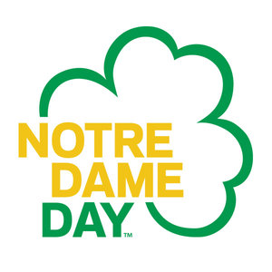

Who We Are
arrow_drop_uparrow_drop_down
The Notre Dame Liturgical Choir is a continuation of the Chapel Choir, which originated in 1969 and was officially founded in 1973. It is composed of approximately 70 singers drawn from all areas of the undergraduate and graduate student body.
The Choir’s main purpose is to provide musical leadership at the 10 AM Solemn Mass at the Basilica of the Sacred Heart, a French Gothic structure built in 1871 by University founder Fr. Edward Sorin. The Sunday Mass at 10 AM (Eastern time) is televised weekly on CatholicTV. CatholicTV can be found on Comcast, Verizon, Full Channel and RCN cable providers in the New England area and is available nationally on Sky Angel IPTV and online at www.CatholicTV.com.
The Liturgical Choir is also responsible for providing liturgical music for services such as Sunday Vespers, weddings in the Basilica, dedications, ordinations, Advent Lessons and Carols, and special university liturgies such as Junior Parents’ Weekend and the Baccalaureate Mass.
Holy Week is of special importance to the Choir, including Palm Sunday, Tenebrae, Good Friday, Easter Vigil, Easter Sunday, and Easter Vespers liturgies.
Membership in the Liturgical Choir is open to all undergraduate and graduate students of the University of Notre Dame. Membership is by audition only, and singers from all colleges and departments are welcome. General auditions for all University choral ensembles are held at the beginning of each academic year. Limited auditions are sometimes held at other times throughout the year as well. Led by director Dr. Andrew McShane, and assisted by Dr. Jonathan Hehn, the choir performs a repertoire drawn on the diverse traditions of a cappella and accompanied sacred music from the Renaissance through the twentieth century. In recognition of the Liturgical Choir’s special ministry to the Notre Dame community, Pope John Paul II extended his apostolic blessing upon the Choir in 1989.
The Choir’s main purpose is to provide musical leadership at the 10 AM Solemn Mass at the Basilica of the Sacred Heart, a French Gothic structure built in 1871 by University founder Fr. Edward Sorin. The Sunday Mass at 10 AM (Eastern time) is televised weekly on CatholicTV. CatholicTV can be found on Comcast, Verizon, Full Channel and RCN cable providers in the New England area and is available nationally on Sky Angel IPTV and online at www.CatholicTV.com.
The Liturgical Choir is also responsible for providing liturgical music for services such as Sunday Vespers, weddings in the Basilica, dedications, ordinations, Advent Lessons and Carols, and special university liturgies such as Junior Parents’ Weekend and the Baccalaureate Mass.
Holy Week is of special importance to the Choir, including Palm Sunday, Tenebrae, Good Friday, Easter Vigil, Easter Sunday, and Easter Vespers liturgies.
Membership in the Liturgical Choir is open to all undergraduate and graduate students of the University of Notre Dame. Membership is by audition only, and singers from all colleges and departments are welcome. General auditions for all University choral ensembles are held at the beginning of each academic year. Limited auditions are sometimes held at other times throughout the year as well. Led by director Dr. Andrew McShane, and assisted by Dr. Jonathan Hehn, the choir performs a repertoire drawn on the diverse traditions of a cappella and accompanied sacred music from the Renaissance through the twentieth century. In recognition of the Liturgical Choir’s special ministry to the Notre Dame community, Pope John Paul II extended his apostolic blessing upon the Choir in 1989.
News
-

Alumni Reunion
February 21-23, 2020, we will be hosting a Liturgical Choir Reunion! If you are an alumnus, you should have received an email to register. Please feel free to share the link for the registration site, found hereDec 7, 2019 ● Laurence, Maggie -

Thank you for your continued support!
This past ND Day, we were blessed to receive an abundance of donations from supporters of our choir. Here's our way of saying thanks!May 1, 2019 ● Laurence, Maggie -
Liturgical Choir on Apple Music and Spotify!
The Notre Dame Liturgical Choir's recordings are now digital! For links to the choir's albums on Apple Music, Spotify, Amazon Music, Pandora, YouTube Music, and more, see the Recordings page.March 23, 2019 ● Clare, Tommy